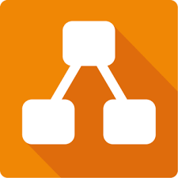

Recursos de Pensamiento Computacional
Sesiones
Sesión 6
Fecha: Sábado 25 de Mayo de 2024
Enlace aún no disponible
Programas y Aplicaciones

Scratch
MIT Scratch es un entorno de programación visual que ayuda a enseñar programación a niños y principiantes utilizando bloques de código que se arrastran y sueltan para crear proyectos interactivos como juegos y animaciones.

draw.io
Es una herramienta en línea gratuita para crear diagramas, organigramas, mapas mentales y otros tipos de diagramas.